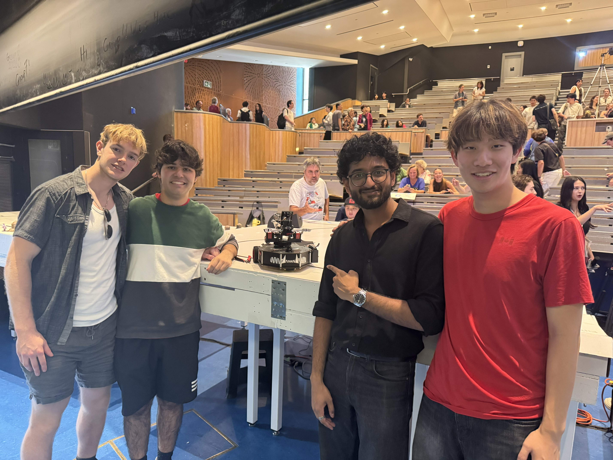

Autonomous Robot
Overview
I started this project portfolio in order to showcase my personal projects, however I also wanted to use it as a way to practice my web development skills, to learn html, and to better incoorperate my github. Overall, I largely coded this myself, with some assistance from AI to help to learn the language faster, as well as how to use the powershell for prompts.
